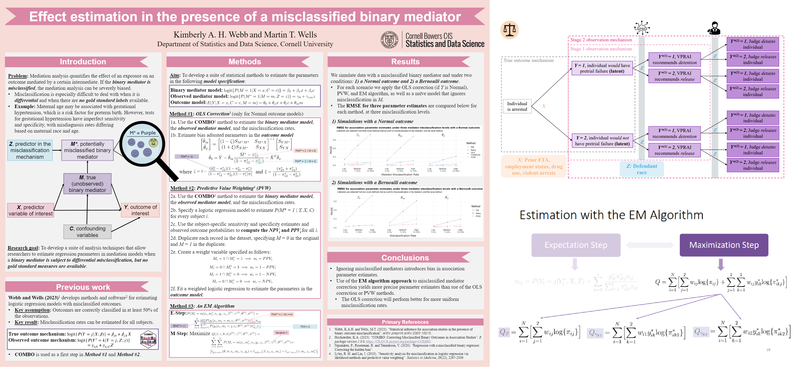

Please see a full list on my CV.
\(~\) \(~\)
KAH Webb and DJ Kent, “Aging gracefully, reporting accurately? Quantifying and correcting for reporting errors in self-rated health among older adults”. Invited talk at Women in Statistics and Data Science, Cincinnati, OH. October 2026.
KAH Webb, “A Shiny new way to share survey results: Building and evaluating a clinical dashboard”. Invited talk at Women in Statistics and Data Science, Cincinnati, OH. October 2026.
KAH Webb and A Lane, “Data-Driven storytelling with Quarto: From research question to accessible reporting”. Tutorial at the Eastern North American Region (ENAR) International Biometric Society, Indianapolis, IN. March 2027.
\(~\)
KAH Webb and MT Wells, “A penalized likelihood approach for generalized linear models with categorical outcome misclassification”. Contributed talk at the Eastern North American Region (ENAR) International Biometric Society, Indianapolis, IN. March 2026.
KAH Webb, “Nobody’s (data is) perfect: How misclassified data biases study results, and what to do about it”. Invited talk at the University of Colorado Anschutz Medical Campus, Biostatistics Seminar Series, Aurora, CO (Virtual). October 2025.
KAH Webb and MT Wells, “The misdiagnosed mediator: Estimating the effect of maternal age on preterm birth risk in the presence of misclassified gestational hypertension”. Invited talk at the International Day of Women in Statistics and Data Science, Virtual. October 2025.
KAH Webb and MT Wells, “The misdiagnosed mediator: Estimating the effect of maternal age on preterm birth risk in the presence of misclassified gestational hypertension”. Topic-contributed talk at the Joint Statistical Meetings (JSM), Nashville, TN. August 2025.
KAH Webb, “Nobody’s (data is) perfect: How misclassified data biases study results, and what to do about it”. Invited talk at the University of Pittsburgh Health Services Research Seminar Series, Pittsburgh, PA. April 2025.
KAH Webb, SA Riley, and MT Wells, “An assessment of racial disparities in pretrial decision-making using misclassification models”. Contributed talk at the Eastern North American Region (ENAR) International Biometric Society, New Orleans, LA. March 2025.
KAH Webb and MT Wells, “Effect estimation in the presence of a misclassified binary mediator”. Invited talk at Women in Statistics and Data Science, Reston, VA. October 2024.
KAH Webb, SA Riley, and MT Wells, “An assessment of racial disparities in pretrial decision-making using misclassification models”. Contributed talk at the Joint Statistical Meetings (JSM), Portland, OR. August 2024.
KAH Webb and MT Wells, “Effect estimation in the presence of a misclassified binary mediator”. Contributed talk at the Eastern North American Region (ENAR) International Biometric Society, Baltimore, MD. March 2024.
KAH Webb, “Modeling misdiagnosis in biomedical and public health association studies: Implications for health disparities research”. Invited talk at the University of Pittsburgh Health Services Research Seminar Series, Pittsburgh, PA. December 2023.
KAH Webb and MT Wells, “Effect estimation in the presence of a misclassified binary mediator”. Contributed poster at the Celebration of Statistics and Data Science, Ithaca, NY. September 2023.
KAH Webb and MT Wells, “Statistical inference for association studies in the presence of binary outcome misclassification”. Contributed talk at the Eastern North American Region (ENAR) International Biometric Society, Nashville, TN. March 2023.
KA Hochstedler, F Fang, R Tamura, T Braun, K Kidwell. “Bayesian methods to compare dose levels to placebo in a small n sequential multiple assignment randomized trial (snSMART)”. Contributed talk at the Eastern North American Region (ENAR) International Biometric Society, Virtual. March 2020.
KA Hochstedler, V Helgeson, H Seltman. “Meta-Analytic Review of Pronoun Use and Health and Relationship Outcomes”. Society of Behavioral Medicine. New Orleans, LA. April 2018.
\(~\)
